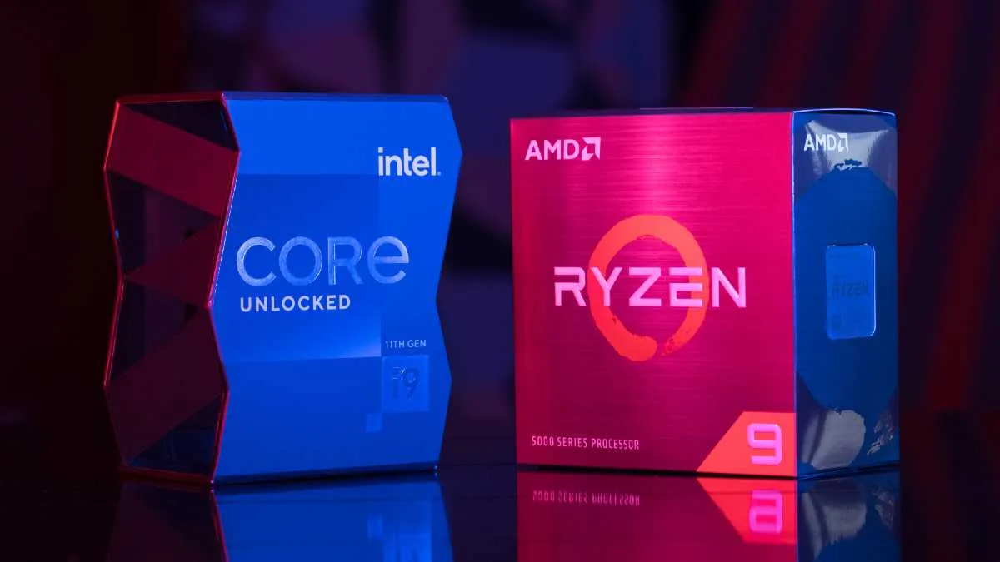

Que es mejor ¿Intel o AMD?
Rendimiento
Calidad
Compatibilidad
La pregunta «¿Cuál es el mejor procesador?» Es difícil de responder. Depende de muchos factores, incluyendo el precio, el rendimiento, la eficiencia, la compatibilidad y las características especiales. Veamos estos factores:
Precio
En general, los procesadores AMD son más baratos que los procesadores Intel. Esto se debe principalmente a que AMD está enfocada en ofrecer un buen rendimiento a un precio razonable, mientras que Intel se enfoca en ofrecer el mejor rendimiento posible. Si estás buscando construir una PC para juegos o para otras tareas intensivas, entonces Intel es probablemente la mejor opción. Si estás buscando una PC para uso general o para tareas menos exigentes, entonces AMD probablemente sea la mejor opción.
Rendimiento
En términos de rendimiento, lo cierto es Intel sigue siendo la marca líder. Sus procesadores son más rápidos y tienen mejor eficiencia energética. Esto se debe en parte a que Intel se enfoca en la innovación y el desarrollo, mientras que AMD prefiere ofrecer la mejor relación calidad precio. Sin embargo, en los últimos años AMD ha estado mejorando rápidamente en términos de rendimiento y ya no está muy lejos de Intel en esta área.
Calidad
En términos de calidad, cada día la brecha es más pequeña, sin embargo, los conocedores siguen pensando que Intel está un paso adelante que AMD. Esto debido a que sus procesadores son más confiables y tienen menos problemas. Claro, hay que tener en cuenta que Intel tiene más experiencia en la fabricación de procesadores y ha estado haciéndolo durante más tiempo, por lo que ha podido perfeccionar los detalles de su producción.
Compatibilidad
Este es quizás uno de los apartados en el que un procesador Intel es superior a un procesador AMD con mayor diferencia. A pesar de que cada vez es más común encontrar procesadores AMD con mayor compatibilidad, lo cierto es que los procesadores Intel son más compatibles con los diferentes equipos. Aunque, teniendo en cuenta el progreso acelerado y la aceptación de AMD en los últimos años, no es de extrañar que muy pronto sea igual de compatible que su máximo competidor.